Eden Prairie, MN
Background
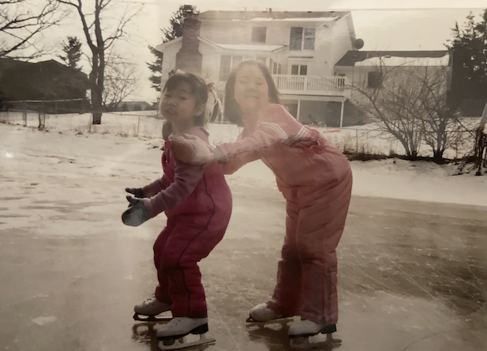
Skating has always been a huge part of my life. I grew up in Minnesota and remember chilly winter days, the neighborhood dads venturing out onto the pond to check if it was safe, and the squeals of the kids as we skated on the shoveled surface.
When I was 9, I watched Sasha Cohen compete at the 2006 Olympics. I clearly remember thinking, “I want to be just like her”, and a year later my mom signed me up for Learn to Skate.
I FELL IN LOVE. Sorry Shep, skating is my first true love, and I was obsessed. I went to bed with my ankles crossed to mimic proper jumping form while I slept. My screen name on neopets and webkinz was “foca17”, Future Olympic Champion at 17. I mentally choreographed programs to every pop song on the radio. I lived and breathed the dream.
For better or worse, the Olympic dream didn’t pan out due to financial reasons and a back injury when I was 15. I stopped skating competitively, but picked it up again in college with the Dartmouth Figure Skating Team with the most amazing team members who are still my closest friends.
 After graduation, I decided I had
accomplished everything I could in the sport and, with the pandemic
hitting, I hung up my skates for good.
After graduation, I decided I had
accomplished everything I could in the sport and, with the pandemic
hitting, I hung up my skates for good.
Or so I thought…
When I was 9, I watched Sasha Cohen compete at the 2006 Olympics. I clearly remember thinking, “I want to be just like her”, and a year later my mom signed me up for Learn to Skate.
I FELL IN LOVE. Sorry Shep, skating is my first true love, and I was obsessed. I went to bed with my ankles crossed to mimic proper jumping form while I slept. My screen name on neopets and webkinz was “foca17”, Future Olympic Champion at 17. I mentally choreographed programs to every pop song on the radio. I lived and breathed the dream.
For better or worse, the Olympic dream didn’t pan out due to financial reasons and a back injury when I was 15. I stopped skating competitively, but picked it up again in college with the Dartmouth Figure Skating Team with the most amazing team members who are still my closest friends.
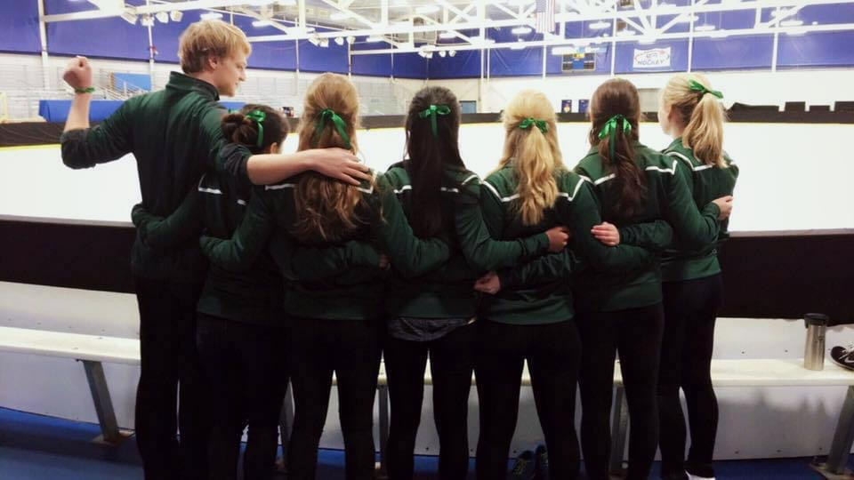
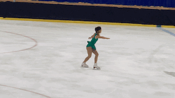
Or so I thought…
The Inspiration
Cut to 3 years later. It’s 2022 and I’m watching the Olympics
with my roommates and excitedly explaining why “we are Jason
Brown stans”, why “it’s so unfair how her incorrect lutz edge
never gets called”, and why this doping drama is “actually the
most insane thing ever”. 2022 Olympics was a hot mess for figure skating,
but there were two bright spots: Kaori Sakamoto’s “Woman” program, a free
skate celebrating the strength of women as well as Nathan Chen’s “Rocketman” free skate, a
joyous program where he fully let loose at the end. These
performances lit a fire underneath me and got me back into
the sport.
The Goals
I’m an extremely goal-oriented person, so I decided on 4 things
I want to do:
Qualify for the 2024 Adult Figure Skating nationals. I’d need to place in the top 4 at the sectional qualifiers. I’ll try my best to do this without a coach ($$) and use phone videos to analyze my progress.
Improve my skating skills. Something I never focused on when I was a jump-crazy pre-teen. It would be way too expensive to try and test all my move-in-the-field levels, but I’d like to at least learn my novice, junior and senior test skills
Obtain three Level 4
spins. A Level 4 is the highest "level" a spin can
be, and the "4" refers to having 4 different "features" in
the spin. You can get a feature from a difficult entry,
exit, or position during the spin.
Skate on Lake Louise. My happiest moments in college included skating with my teammates on Lake Morey in Vermont. My roots in skating come from pond skating outdoors, and I never want to leave that behind.
The Journey
Washington, DC
March 2022: First sessions
I LOVE skating outside, and thankfully my muscle memory was
still there as I visited the DC Sculpture Garden rink with
friends.

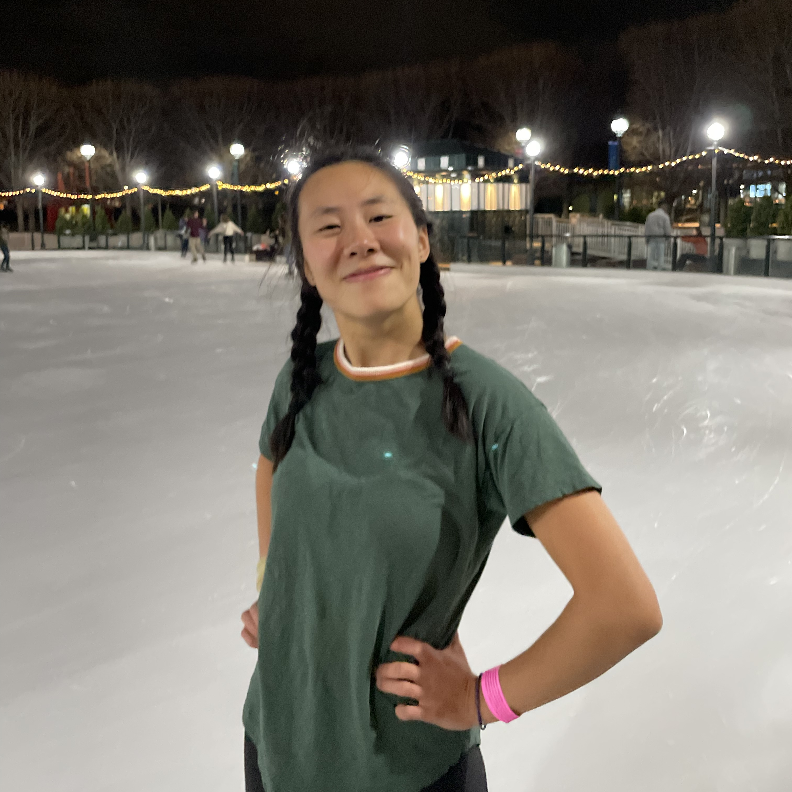
Arlington, VA
May 2022: Purchasing New Skates
I've used second-hand skates my entire life and hoped that
the pair I used in college would still work. Sadly, the
boots were breaking down and I decided this passion was worth
investing in a new pair of Jacksons. I bought my boots and
blades online, molded the boots in my oven, and went to a
local rink to have my blades mounted professionally.
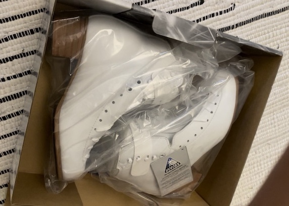
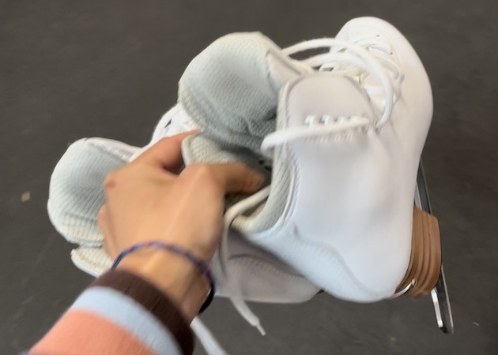
June-August 2022: Brief hiatus due to moving
+ travelling + getting COVID 😭😭😭
Independence, MO
September-November 2022: Getting my existing
jumps back
This was a surprinsgly frustrating process. Consistency was
always my forte, but jumps like the double toe loop did not come
back easily. To help me through the process, I watched a ton of technique
videos on YouTube and practiced the jumps off-ice.
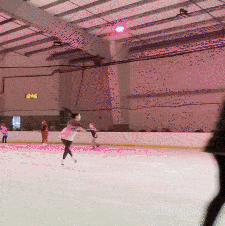
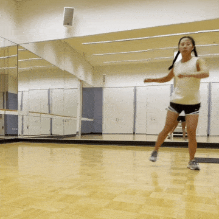
December 2022-January 2023: Improving back
and knee flexibility while travelling/moving
I'm travelling again and moving to California! I won't be on the
ice for about a month, so I'll continue working on my back
flexibility (which is abysmal right now) for my spins and
landing position, and improving my
knee/hip flexibility for spread eagles, ina bauers, and deeper
edges.
Marlborough, NH
🚨🚨🚨 HAPPY PLACE ALERT 🚨🚨🚨
Got to skate on a pond at Camp Glen Brook in New Hampshire!
Thank you Shep for filming :)

San Francisco, CA
February-May 2023: Getting my first Level 4 (ish) spin!!
I actually don't think this gif fully counts as a level 4 spin, but if done with a little more ~polish and pizzazz~ it would! It's a camel spin, difficult windmill transition (level 1), sit spin, sit back variation (level 2), non-basic position but pretend it's a little better (level 3), upright variation (level 4!!!)
Also I HIGHLY recommend the Yerba Buena ice rink - the natural light is AMAZING and the adult skating community is so supportive

Also I HIGHLY recommend the Yerba Buena ice rink - the natural light is AMAZING and the adult skating community is so supportive
Kapolei, HI
June-August 2023: Off-ice training
Spending 2 months in Hawaii? Hooray! Spending 2 months off the ice? Boooo. I did manage to make it to the rink twice, but otherwise I focused on off-ice jumps a couple times a week and worked on more spin position ideas. At some point I also developed a bunion / expansion of my left pinky metatarsal which made my boot EXTREMELY painful - thankfully Kevin, the skate tech at the rink, fixed the problem by punching out the boot.

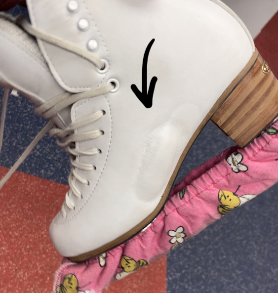
San Diego, CA
September 2023 - Current: Focused Training + Creating a program
Time goes by SO QUICKLY! There's less than 6 months until Sectionals (qualification for nationals), and I don't have a program or a focused training plan. We just moved to San Diego, and I did/am doing (this is present day, hello) a couple things:
1. Renewed my US Figure Skating membership and joined the San Diego Figure Skating Club
2. Created a training plan for my spins + jumps + skating skills + program choreography for each month leading up to Sectionals
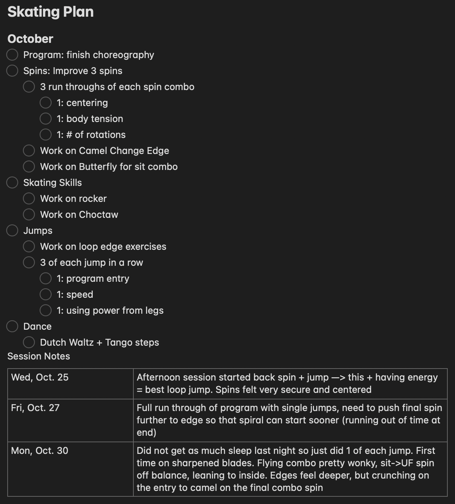
3. Picked music - I stumbled upon the Muse song "Madness" one day and immediately clicked with it. It's going to make such a FUN PROGRAM
4. Joined the San Diego Ballet's free weekend adult classes to work on my posture and poise (some of the weakest parts of my skating)
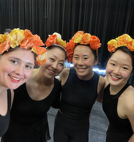
Previous Project
Biking the East Coast Greenway
Next Project
South Africa Climbing Trip